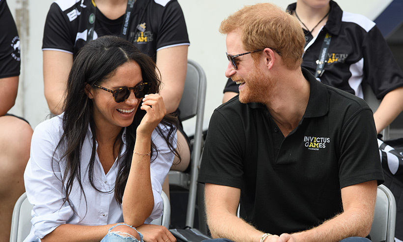
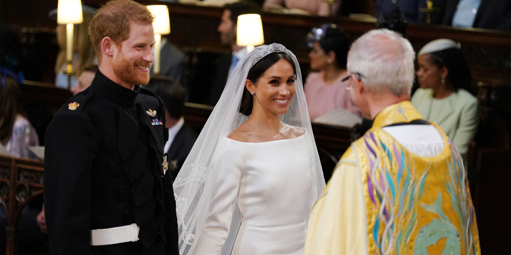
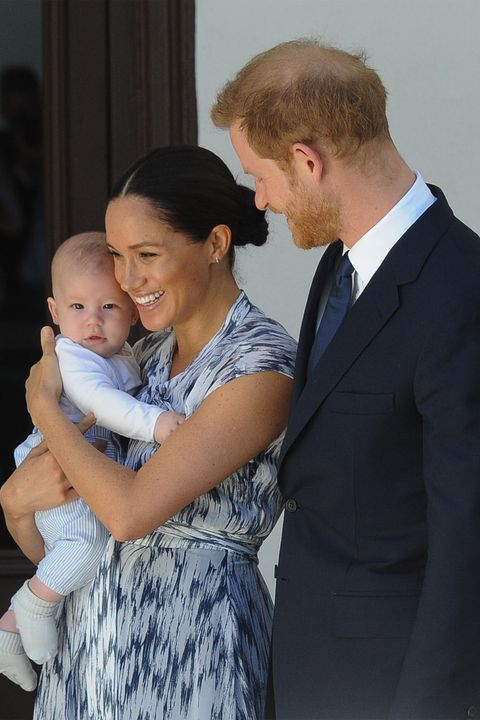

Hello World! Hello World!
My name is Penelope Michaud and I am a big fan of Meghan Markle
Rachel Meghan Markle was born August 4, 1981, in Los Angeles, California. Her mother, Doria Ragland, is a former social worker and yoga instructor living in View Park Windsor Hills, California Markle has often described having a very close friendship with her mother. Her father, Thomas Markle Sr. lives in Rosarito, Mexico, and is a retired television director of photography and lighting director whose profession resulted in his young daughter often visiting the set of Married...with Children. Markle's parents divorced when she was six years old. Her older paternal half siblings are Samantha Markle and Thomas Markle Jr from whom she is reportedly estranged. Markle described her heritage in a 2015 essay for Elle: "My dad is Caucasian and my mom is African American. I'm half black and half white .... While my mixed heritage may have created a grey area surrounding my self-identification, keeping me with a foot on both sides of the fence, I have come to embrace that. To say who I am, to share where I'm from, to voice my pride in being a strong, confident mixed-race woman." She is descended on her mother's side from slaves, and from European settlers on her father's side. Markle grew up in Hollywood. She was educated at private schools, beginning at age two at the Hollywood Little Red Schoolhouse. Nick News with Linda Ellerbee profiled her successful campaign at age 11 to get Procter & Gamble to change a national television commercial that she viewed as sexist. She was raised as a Protestant, although she attended Immaculate Heart High School, an all-girl Catholic private school in Los Angeles. She then attended Northwestern University, where she joined Kappa Kappa Gamma sorority and participated in community service and charity projects. She also served an internship at the American embassy in Buenos Aires, and studied for one semester in Madrid, known in the United States as "junior year abroad". She received a bachelor's degree from the Northwestern University School of Communication in 2003, with a double major in theater and international studies.

Early in her career, Markle worked as a freelance calligrapher and taught bookbinding to support herself between acting jobs. Her first on-screen appearance was a small role as a nurse in an episode of the daytime soap opera General Hospital. Markle had small guest roles on the television shows :
She also took on several contract acting and modeling jobs, including a stint as a "briefcase girl" on the US game show Deal or No Deal. She appeared in Fox's series Fringe as Junior Agent Amy Jessup in the first two episodes of its second season. Markle had some difficulty getting roles early in her career. In 2015, she wrote: "Being 'ethnically ambiguous', as I was pegged in the industry, meant I could audition for virtually any role ... Sadly, it didn't matter: I wasn't black enough for the black roles and I wasn't white enough for the white ones, leaving me somewhere in the middle as the ethnic chameleon who couldn't book a job." Markle appeared in two 2010 films, Get Him to the Greek and Remember Me, and one 2011 film, Horrible Bosses. She was paid $187,000 for her role in Remember Me and $171,429 for her role in the short film The Candidate. She also appeared in episodes of Cuts; Love, Inc.; 90210; Knight Rider; Without a Trace; The League; and Castle. In July 2011, Markle joined the cast of the USA Network show Suits. Her character, Rachel Zane, began as a paralegal and eventually became an attorney. She completed work on the seventh season in late 2017. According to a critique in The Irish Times, Markle "actively re-positioned" her character from ingénue to "the show's moral conscience" and gave viewers the unique portrayal of a daughter whose African-American father is in a position to help her career and advance her "desire to crack both racial and gender glass ceilings".While working on Suits, Markle lived for nine months each year in a rented house in the Seaton Village neighborhood of Toronto. Fortune magazine estimated that Markle was paid $50,000 per episode, amounting to an annual salary of about $450,000. In 2014, Markle founded the lifestyle website The Tig, where she wrote about food, fashion, beauty, and travel, and profiled inspirational women. As the website grew, Markle brought in experts such as dieticians, make-up artists, and fitness and yoga instructors. The website's audience consisted primarily of the fans of Markle and Suits. Markle reinforced The Tig's messages of self-love, positivity, and spirituality on social media, reaching 3 million followers on Instagram, 800,000 on Facebook, and 350,000 on Twitter. She closed The Tig in April 2017, taking all of its articles offline, and deleted her social media accounts in January 2018.
It was estimated that, as a lifestyle blogger, Markle earned about $80,000 annually from endorsements and sponsorships.
Markle began a relationship with actor and producer Trevor Engelson in 2004. They were married in Ocho Rios, Jamaica, on September 10, 2011, and concluded a no-fault divorce in August 2013, citing irreconcilable differences. Markle's subsequent relationship with celebrity chef and restaurateur Cory Vitiello lasted almost two years, ending in May 2016.
In June 2016, Markle began a relationship with Prince Harry, whom she had met on a blind date set up by a mutual friend. At the time, he was fifth in line to the British throne; his grandmother is Elizabeth II, queen of the United Kingdom and 15 other Commonwealth realms, as well as head of the Commonwealth. In November, the British royal family's communications secretary released an official statement that addressed sexism, racism, and defamatory stories directed toward Markle. In September 2017, Markle and Prince Harry appeared together in public for the first time at an official royal engagement at the Invictus Games in Toronto.
Markle's engagement to Prince Harry was announced on November 27, 2017, by Clarence House and Kensington Palace. The announcement prompted generally positive comments about the possible social significance of a mixed-race member of the royal family. Markle announced that she would retire from acting,and began the process of becoming a British citizen. In preparation for the wedding, the Archbishop of Canterbury, Justin Welby, baptized Markle and confirmed her into the Church of England on March 6, 2018. The private ceremony, performed with water from the River Jordan, took place in the Chapel Royal at St James's Palace. The marriage ceremony was held on May 19 at St George's Chapel, Windsor Castle.
After the wedding, the Duke and Duchess originally lived at Nottingham Cottage in London, on the grounds of Kensington Palace. The couple later moved to the more than two centuries-old, Frogmore Cottage in the Home Park of Windsor Castle. The Crown Estate refurbished the cottage at a cost of £2.4 million, paid out of the Sovereign Grant, with the couple picking up expenses beyond restoration and ordinary maintenance. Their office was moved to Buckingham Palace. On May 6, 2019, the Duchess gave birth to Archie Mountbatten-Windsor, who is seventh in line to the throne.
Hope you liked it !
Owls HTML Element